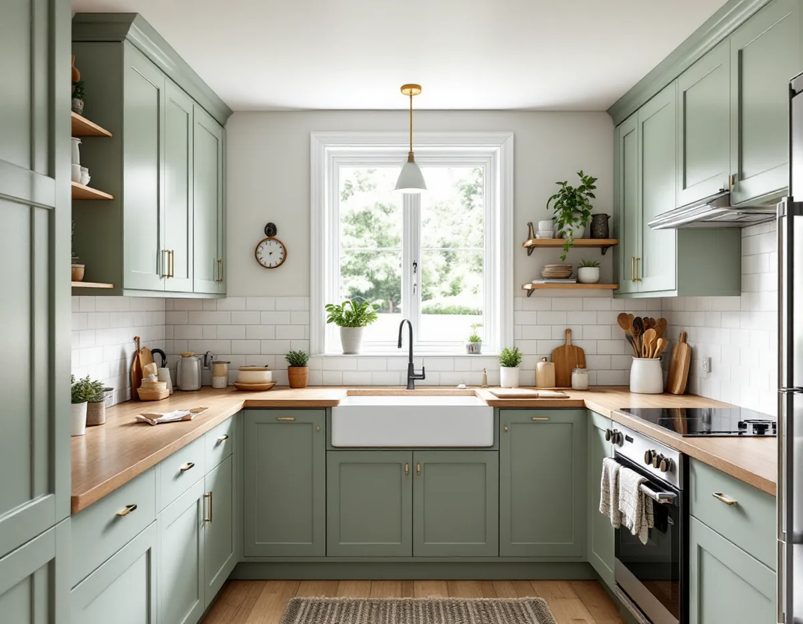
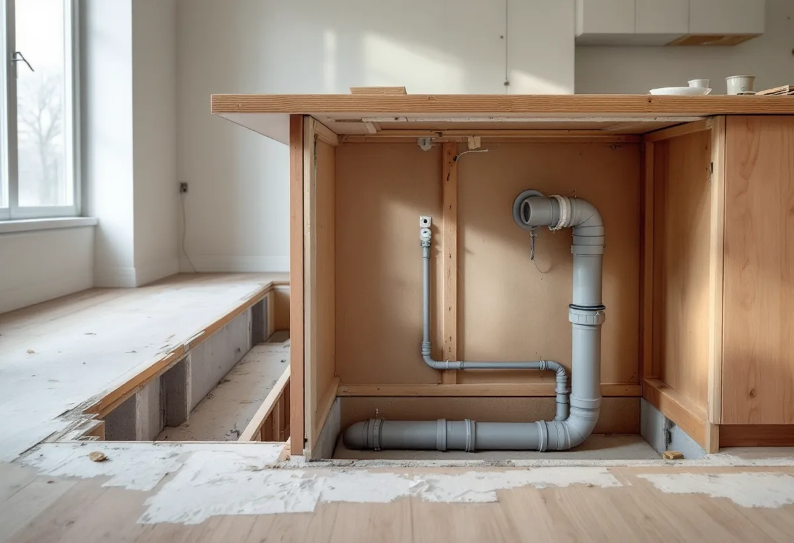

Besök på plats
Vi mäter upp köket och ser hur stam, frånluft och väggar är placerade.
Järfällas småhus byggdes ofta i serier av samma byggfirma, och köket ligger därför på samma plats i många hus i området. Det gör planeringen enklare, men bärande väggar, avlopp och ventilation måste ändå bedömas i varje hus. Vi kommer ut gratis, går igenom köket och lämnar ett skriftligt kostnadsförslag.

Kommunens kulturmiljöplan för Kallhäll beskriver hur Bolinders lät bygga radhus för sina anställda längs Bolindervägen från 1945, och intill dem egnahemsvillor i Skogstorp. Ett kök som planerades för 1940-talets hushåll har sällan plats för det man vill ha i dag, och frågan blir ofta om ytan kan lånas från ett angränsande rum.
I planen för Jakobsberg beskrivs Ekedal, som började byggas 1958 med radhuslängor längre ned och villor högre upp, och kedjehusen vid Dressyrvägen. Grändvillorna vid Hovvägen, byggda i souterräng, kom omkring 1960. Gemensamt är att ett kök sällan är unikt i sitt område – grannen har ofta samma mått och samma installationer.
Det gör att erfarenheter från ett hus ofta går att använda i nästa, till exempel var stammen går. Men husen har byggts om på olika sätt genom åren, så varje kök bedöms för sig. I många hus har köket redan bytts en gång, och då kan nya ledningar ligga ovanpå gamla eller skåp ha flyttats utan att eluttagen följt med.

I Ekedal finns souterrängradhus, där huset ligger i en slänt och har ett plan delvis under mark. Står köket på entréplanet går stammen ned genom det nedre planet. Ska köket flyttas eller få en köksö behöver fallet på avloppet räknas ut, och ibland är det enklare att flytta diskmaskin och diskbänk tillsammans till en vägg där stammen redan finns.
Väggarna mellan kök och vardagsrum kan bära bjälklaget i hus med två plan. Järfälla kommun skriver på sidan om bärande konstruktion att ritningar visar husets principiella konstruktion, men att de kan vara ofullständiga och att det inte är säkert att de som byggde följde dem. Kommunen kan inte bedöma väggen åt dig och hänvisar till en konstruktör.
Påverkas den bärande konstruktionen krävs anmälan och startbesked med planritning, konstruktionsritning från en sakkunnig konstruktör och förslag till kontrollplan. När handlingarna är kompletta räknar kommunen med beslut inom fyra veckor.
Huvudman för den allmänna VA-anläggningen i Järfälla är kommunen själv. Enligt kommunens allmänna bestämmelser för vatten och avlopp (ABVA) får spillvatten från en matavfallskvarn inte släppas till avloppet utan huvudmannens skriftliga medgivande. Vill du ha en avfallskvarn i det nya köket behöver medgivandet alltså finnas innan den installeras.
Samma bestämmelser säger att fett i större mängd inte får tillföras avloppet. I ett vanligt hushåll handlar det om att torka ur stekpannor och kasta fettet i soporna i stället för att spola ned det.
Ska ledningarna i köket ändras väsentligt, eller en ny anläggning installeras, krävs anmälan och startbesked. Det gäller även om resten av renoveringen är lovfri. Badrummet är ofta kopplat till samma stam, se badrumsrenovering i Järfälla.
Sedan den 1 december 2025 är fler åtgärder bygglovsbefriade. Järfälla kommun påpekar på sidan om bygglovsbefriade åtgärder att sådana åtgärder ändå ska följa Boverkets byggregler och kan kräva anmälan, till exempel vid väsentliga ändringar av bärande konstruktion, vatten, avlopp och ventilation.
Kommunen råder också fastighetsägare att dokumentera hur reglerna uppfylls och spara dokument och ritningar, eftersom handlingar för bygglovsbefriade åtgärder inte längre arkiveras hos kommunen. Det är värt att tänka på även i köket: en ritning över nya ledningar och en anteckning om var väggen öppnats är bra att ha när huset en dag ska säljas.
Be därför om ritningar och handlingar när köket är klart och spara dem med husets papper. Ska fasaden eller fönstren målas om i samband med en tillbyggnad, se målare i Järfälla.
Vi mäter upp köket och ser hur stam, frånluft och väggar är placerade.
Konstruktören bedömer väggar som ska öppnas, och vi stämmer av avloppets fall.
Du får ett skriftligt förslag där arbete och material står var för sig.
Anmälan lämnas in, och arbetet börjar när startbeskedet har kommit.
Rivning, installationer, ytskikt och montering görs i en planerad ordning.
Vi provar vitvaror och belysning och lämnar över ritningar och handlingar.
Skatteverket räknar det som rotarbete i ett småhus att riva väggar och bygga om planlösningen, att montera fast köksinredning och installera vitvaror vid en omfattande renovering och att installera avlopp och ventilation. Avdraget är 30 procent av arbetskostnaden, högst 50 000 kr per person och år och högst 75 000 kr tillsammans med rut.
Bortforsling av gammal inredning ger inte rotavdrag. Avdraget dras direkt på fakturan.
Om köket kan ligga kvar där stammen går, om en vägg i ett hus med två plan ska öppnas och om avloppet behöver dras om med rätt fall. Därefter styr stomme, bänkskiva och vitvaror. Platsbesöket är gratis och kostnadsförslaget skriftligt.
Planering, el, VVS, fläkt och väggar.
Köksrenovering i Stockholm →Takbyte, takbesiktning och plåtarbeten.
Takläggare i Järfälla →Jakobsberg, Viksjö och Kallhäll.
Takrenovering i Järfälla →Planbesked, extra bostad och ansvar.
Byggföretag i Järfälla →Underhållsmålning i rätt tid.
Fasadmålning i Järfälla →Kedjehus, sekelskiftesvillor och parstuga i Stäket.
Fasadrenovering i Järfälla →Bruksvillor, radhus och 70-talsfönster i Järfälla.
Fönsterbyte i Järfälla →Bottenstycken, bleck och vita omfattningar.
Fönsterrenovering i Järfälla →Kedjehus, egnahem och gamla golvskikt.
Golvläggare i Järfälla →Slipa och behandla trappan i huset.
Golvslipning i Järfälla →Radhus, kedjehus och souterränghus.
Badrumsrenovering i Järfälla →Putsade radhus, kedjehus och villor i Järfälla.
Målare i Järfälla →Stuprör, skärmtak och plåttak i Järfälla.
Plåtslagare i Järfälla →Förgårdar, förråd och ytterdörrar.
Snickare i Järfälla →Lovfritt takbyte och papperen du sparar.
Takbyte i Järfälla →Ny tapet på skivväggar i radhus.
Tapetsering i Järfälla →